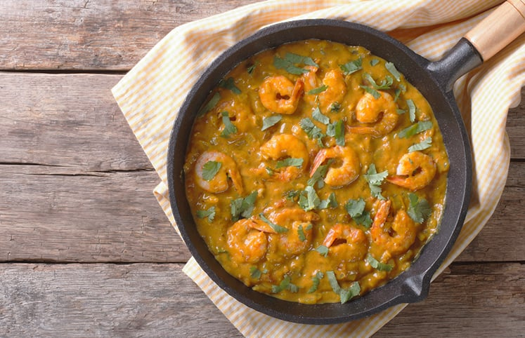
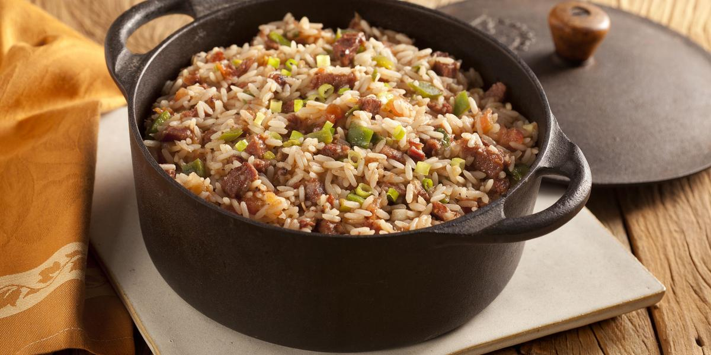
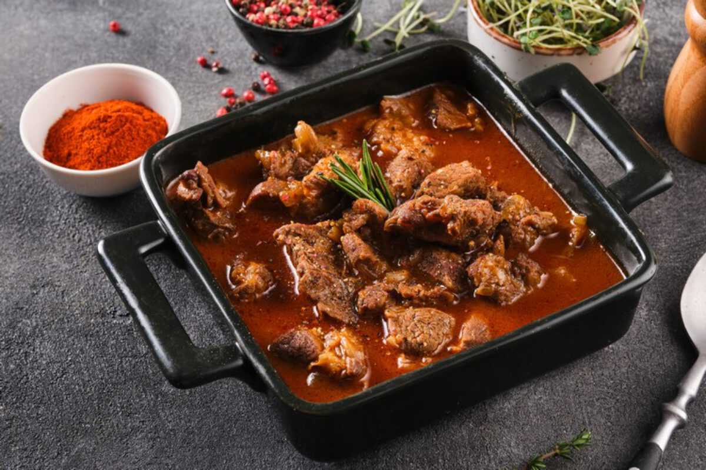

Tacacá

Ingredientes
- 4 xícaras (chá) de água
- 1/2 xícara (chá) de polvilho azedo (ou goma de mandioca)
- 1 colher (chá) de sal
- 500 g de camarão salgado (seco)
- 4 folhas de chicória
- 4 dentes de alho bem amassados
- 3 pimentas-de-cheiro
- 2 maços de jambu
- 2 litros de tucupi
Modo de preparo
- Coloque o tucupi em uma panela com o alho bem amassado, o sal, a chicória e as pimentas.
- Leve ao fogo.
- Quando começar a ferver, abaixe o fogo, tampe a panela e deixe cozinhar por 30 minutos aproximadamente.
- Simultaneamente em outra panela, cozinhe o jambu até ficar tenro.
- Retire do fogo, escorra e reserve.
- Lave bem os camarões e leve-os ao fogo em uma panela com 4 xícaras de água.
- Deixe ferver por aproximadamente 5 minutos.
- Retire a cabeça e a casca.
- Em uma panela, misture o polvilho com a água dos camarões, leve ao fogo e mexa até obter um mingau.
- Sirva em uma cuia com uma concha de tucupi, um pouco do mingau, algumas folhas de jambu e os camarões.
Feijoada

Ingredientes
- 1 Kg de feijão preto
- 100 g de carne seca
- 70 g de orelha de porco
- 70 g de rabo de porco
- 70 g de pé de porco
- 100 g de costelinha de porco
- 50 g de lombo de porco
- 100 g de paio
- 150 g de lingüiça portuguesa
- 2 cebolas grandes picadinhas
- 1 maço de cebolinha verde picadinha
- 6 dentes de alho
- Pimenta do reino a gosto
- 40 ml de de pinga
Modo de preparo
- Coloque as carnes de molho por 36 horas ou mais, vá trocando a água várias vezes, se for ambiente quente ou verão, coloque gelo por cima ou em camadas frias.
- Coloque para cozinhar passo a passo: as carnes duras, em seguida as carnes moles.
- Quando estiver mole coloque o feijão, e retire as carnes.
- Finalmente tempere o feijão.
Moqueca

Ingredientes
- 1 kg de peixe cação em postas
- 1 pimentão verde em rodelas
- 1 pimentão vermelho em rodelas
- 1 pimentão amarelo em rodelas
- 1 tomate em rodelas
- 1 cebola em rodelas
- 1 fio de azeite de oliva
- vinagre (ou limão)
- molho shoyu
- açafrão, sal, pimenta-do-reino
- 1 maço de coentro (ou cheiro verde) e cebolinha
- 1 tablete de caldo de peixe (ou camarão ou frango)
- 1 vidro pequeno que leite de coco (200 ml)
Modo de preparo
- Em uma panela (de preferência que seja de barro) coloque no fundo uma camada de cebola, tomate e pimentões coloridos.
- Coloque as postas de peixe.
- Vamos temperar: um fio de azeite, um pouquinho de vinagre (ou limão), regue com molho shoyu, uma pitada de sal, uma pitada de açafrão; uma pitada de pimenta do reino (ou molho de pimenta).
- Coloque na panela o tablete de caldo de peixe (camarão ou frango).
- Coloque o restante das rodelas de cebola, tomate e pimentões;
- Lembre-se que o peixe pega tempero muito fácil e o que faz ficar gostoso é a suavidade no sabor, portanto coloque um pouquinho de cada ingrediente (sal, vinagre, azeite, shoyu, pimenta, açafrão).
- O peixe vai soltar uma água, tampe a panela e deixe cozinha até ficar mole, cuidado para não cozinhar muito e desfazer as postas. Se necessário coloque um pouquinho de água filtrada.
- Quando o peixe estiver cozido, tempere com o coentro e a cebolinha e derrame o leite de coco (que nesta receita pode ser opcional).
- Servir com pirão e arroz branco.
Arroz Carreteiro

Ingredientes
- 3 copos de arroz
- 500 g de carne seca
- 200 g de bacon fatiado
- 200 g de calabresa
- 1 tomate grande bem maduro
- 1 cebola grande
- Pimenta calabresa
- Salsa, sal
Modo de preparo
- Cozinhe a carne seca em panela de pressão, retire, espera esfriar e desfie.
- Reserve.
- Retire a pele da calabresa e corte em cubos juntamente com o bacon.
- Corte o tomate em cubos pequenos sem as sementes bem como a cebola.
- Reserve.
- Refogue o bacon e a calabresa até ficar bem dourada, acrescentando depois a cebola, tomate, pimenta calabresa e a carne desfiada.
- Após acrescente o arroz, afogue bem, adicione a água corrigindo o sal se necessário e abaixe o fogo aguardando secar.
- Quando pronto, colocar a salsa em cima.
Picadinho

Ingredientes
- 500 g de coxão mole (cortados em cubo)
- 1 caldo de carne
- 2 dentes de alho (bem picados)
- 2 colheres de sopa de óleo
- 1 cebola média (bem picada)
- 2 folhas de louro
- 2 batatas médias (cortada em cubos ou pedaços médios)
- 200 g de molho de tomate
- 500 ml de agua (temperatura ambiente)
Modo de preparo
- Escolha uma panela funda.
- Coloque o óleo e os cubos de carne deixe fritar (vai soltar bastante água).
- Quando começar a secar, coloque a cebola, alho, orégano, pimenta-do-reino, caldo de carne, folhas de louro, deixe refogar (mas tenha cuidado para não deixar a carne queimar).
- Depois acrescente 250 ml de água, deixe cozinhar um pouco (5 minutos).
- Após isso coloque as batatas, cenoura, cheiro verde picado, cebolinha e o restante da água.
- Deixe cozinhar por 30 minutos e por fim coloque o molho de tomate mexa bem e deixe mais 5 minutos.